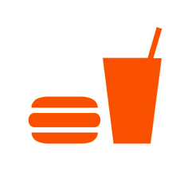

O SIGNIFICADO DAS CORES
| Azul |
|
Associado principalmente a sensação de paz, assim como o branco, porém de forma mais sutil. Lembra limpeza, água, serenidade e produtividade. Em tons escuros transmite segurança, confiança, sucesso e poder. Muito utilizado em empresas de tecnologia |
| Roxo |
|
O significado da cor roxa remete a sabedoria, fantasia, mistério, espiritualidade. O Roxo é uma cor que acalma e transmite bem-estar, por isso, produtos de beleza, anúncios de cuidados com o corpo e tratamentos alternativos são aplicações frequentes dessa tonalidade. |
| Vermelho |
|
A simbologia da cor vermelha representa o símbolo do amor, emoção, excitação, romântico, prazer. Também expressa urgência, e por isso é comumente utilizado na publicidade de lojas em liquidação.
Combinado com o amarelo, é bastante utilizado no segmento de alimentação, como em restaurantes e redes de fast-food, pois estimula o apetite.
|
| Verde |
|
A cor verde está associada diretamente com saúde, natureza, esperança, vida. Lembra equilíbrio, frescor, harmonia, coisas saudáveis. Seu uso em ciência, medicina, ecologia, turismo e empresas de alimentos orgânicos é bastante comum. |
| Rosa |
|
A cor rosa em tons claros expressa inocência, enquanto em tons mais escuro inspira desejo, afeto e feminilidade. Muito usado em produtos voltados ao público feminino. |
| Marron |
|
A simbologia da cor marrom transmite sensação de tradição, conservadorismo, confiabilidade, solidez e segurança, sendo bastante utilizado em móveis, empresas de decoração de interiores, arquitetura. |
| Amarelo |
|
A cor amarela incentiva a criação e a comunicação, desperta alegria, animação, entretenimento. Por chamar bastante atenção, é utilizada na sinalização de trânsito e também em vitrines de lojas. |
| Laranja |
 |
A cor laranja representa uma cor enérgica, estimulante, jovem. Incentiva a expansão, criatividade, entusiasmo e otimismo. Promove mudança e dinamismo. Muito usada no segmento alimentício, esportivo e de lazer. |
| Preto |
|
A cor preta de acordo com o contexto pode representar tristeza e luto, porém se for bem utilizado transmite nobreza, tradição, curiosidade, superioridade, poder, profissionalismo. Empresas de engenharia, escritórios de advocacia, cosméticos e produtos de luxo utilizam frequentemente essa cor. |
| Branco |
|
A cor branca em sua combinação com outras cores é harmônica, expressa paz, fé, luz e pureza. Comumente utilizado no segmento de Medicina e Odontologia. |
| Cinza |
 |
O cinza é uma cor clássica, neutra, que transmite elegância e respeito. É usado em empresas de tecnologia e do ramo automobilístico, pois demonstra também responsabilidade e profissionalismo. |